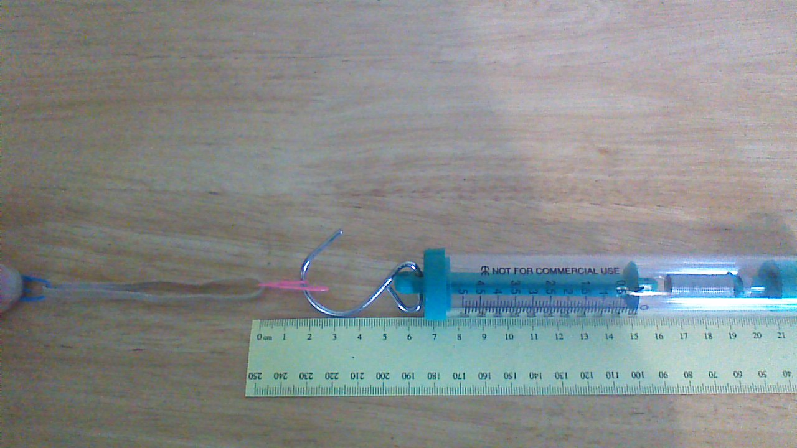
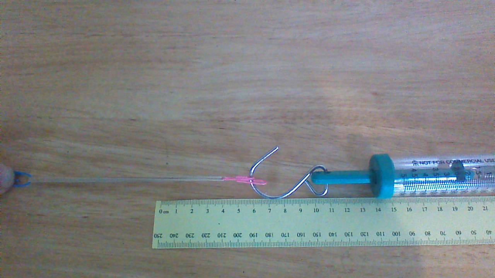
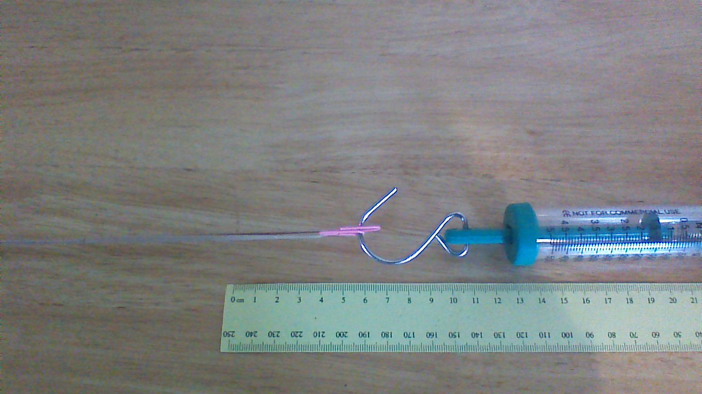
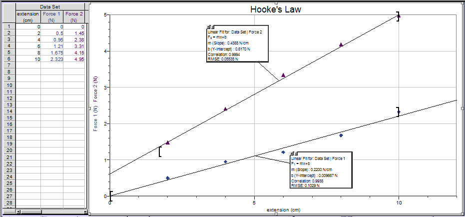

The magnitude of a force may be a function of position, time or velocity. In the simplest case, the force magnitude is constant: for example, the weight of an object near the surface of the earth is a constant force. The next simplest case is a force proportional to position:
.
A proportionality can be rewritten as an equation by including a proportionality constant. It can also be helpful to define the origin of the coordinate system such that the net force is zero when the value of x = 0 so that the value of the y-intercept, b = 0. But since forces are vectors, the direction of the force and the displacement causing it must also be considered. If the direction of a one-dimensional force is acting in the opposite direction of the displacement, the force is said to be following Hooke's law:
.
Hooke's law forces have certain properties that will prove to be very useful in further explorations of mechanics. The purpose of this activity is to collect and plot data for two systems following Hooke's Law and calculate the force constants, k, for the systems.
Lay a single rubber band of any size or type on a flat surface and place a ruler next to it. Attach a paper clip to the rubber band and attach the hook of the spring scale to the paper clip. Pull slightly on the paper clip until the rubber band just loses its slackness. Move the band or the ruler so that the point where the clip is attached to the band is at the 0.0 mark of the ruler and the ruler is pointing away from that point.

Figure 1: A rubber band ready for data collection.
Stretch the rubber band by pulling on it with the spring scale. Extend it one or two centimeters at a time (depending on its stiffness of the rubber band) for at least five consecutive readings, recording the force needed to stretch it that length for each condition. Both extension and force should be measured to the closest tenth.

Figure 2: For a single rubber band, a 1.8 N force is required to stretch it 4.0 cm.
Tie or knot two rubber bands together to make a new elastic system with a noticeably different stiffness. Repeat the procedure for this system, starting with the just-slack system at the 0.0 cm point of the coordinate system.

Figure 3: For two knotted rubber bands, a 1.2 N force is required to stretch it 4.0 cm.
Open Logger ProTM and enter the extension of the single rubber band in the x-column and the applied force in the y-column. From the Data drop-down menu, choose 'New Data Set' and enter the data for the two-band system. Plot both sets of data on the same graph by checking the boxes for 'Force' for both 'Data Set 1' and 'Data Set 2' in the axis options tab of the Graph Options menu. It will be necessary to open Data Set 2 by clicking the '+' button to the left of the name.
Use the best fit option to find the Hooke's Law force constant for each band from the slopes of the straight lines and record the values in units of N/cm on the Report Sheet. Save the file as Hookes_Law.cmbl and submit it with the Report Sheet. The plot should show proper graphing technique: a title for the graph, labeled axes, a solid point symbol, etc.

For this sample data, the Hooke's Law constant for the upper curve (violet triangles) is 0.44 N/cm and 0.22 N/cm for the lower curve (blue diamonds).
Answer the following questions on the Report Sheet.
This Lesson has two short experiments that must be completed for full credit. The second experiment on frictional forces is included next in this module. After completing both experiments, submit both completed Report Sheets to the Lesson 5 Lab: Hooke's Law & Frictional Forces assignment folder.
Note: your lab report sheet should be completed by hand. You will need to scan and upload the completed document to the assignment folder.